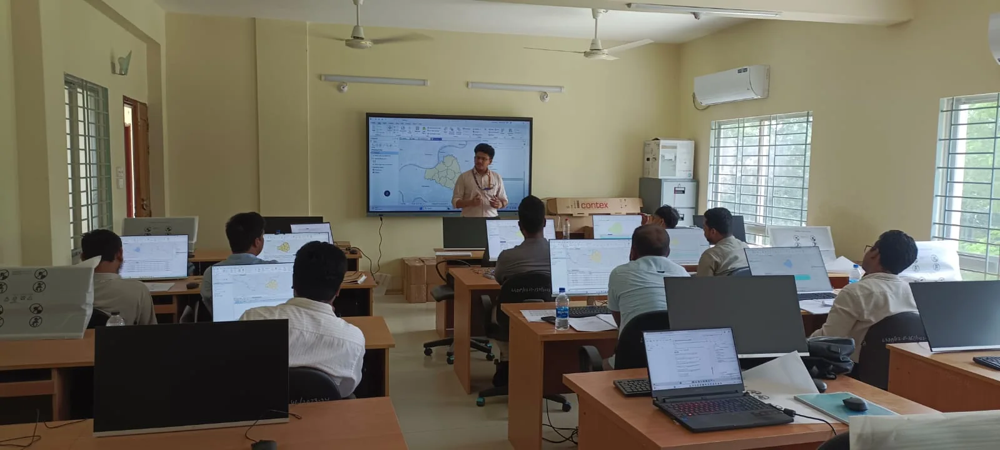
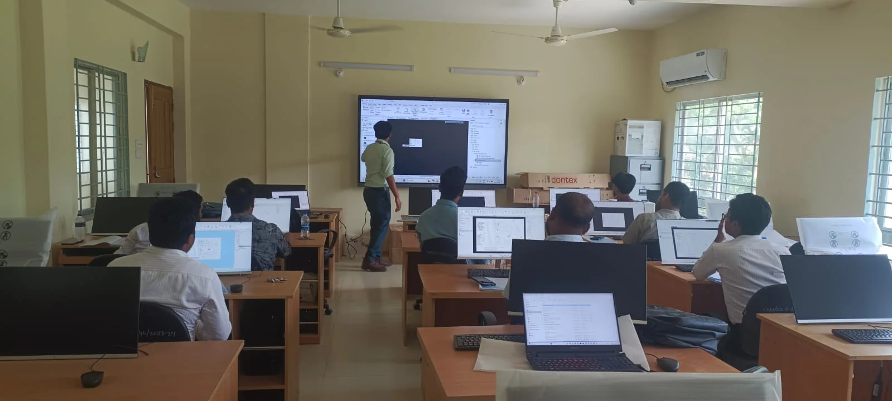
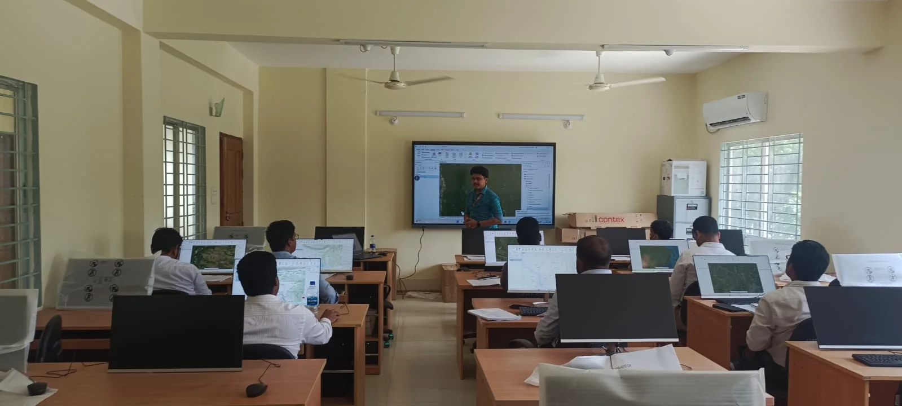
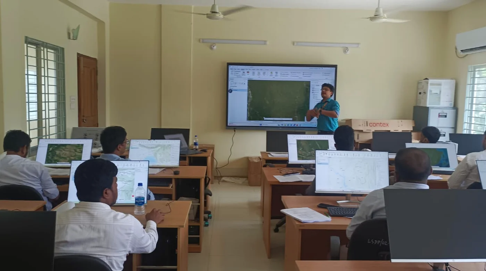

Teaching & Capacity Building
I teach GIS, remote sensing, UAV, LiDAR, field-survey concepts, and ArcGIS workflows through applied demonstration and guided practice for professional and institutional audiences.
GIS and Remote Sensing Practical Training
Directorate of Technical Education (DTE)
- Role
- Practical instructor and learner-support facilitator
- Format
- Instructor-led desktop laboratory sessions



Delivered practical GIS and remote-sensing instruction using desktop workflows that connected data preparation, mapping, geoprocessing, spatial analysis, and visualization.
- Structured technical content into sequential, reproducible exercises.
- Explained tools through live demonstrations and spatial examples.
- Supported learners while they completed tasks on individual workstations.
- Checked outputs, clarified errors, and reinforced correct workflow logic.
UAV and LiDAR Capacity-Building Training
Bangladesh Agricultural Research Council (BARC)
- Role
- Technical contributor and participant-support facilitator
- Focus
- UAV, LiDAR, field survey, imagery, and quality control
Contributed to professional capacity building by linking field procedures with the geospatial products they generate, including imagery, point clouds, maps, and quality-controlled survey outputs.
- Communicated UAV and LiDAR concepts in an applied field-to-GIS sequence.
- Connected data acquisition decisions with downstream mapping quality.
- Supported technical discussion and participant engagement.
- Emphasized safe, traceable, and quality-aware survey practice.
ArcGIS Pro: Essential Workflows
Esri Bangladesh
- Role
- Trainer and practical-performance evaluator
- Audience
- Official and professional participants

Delivered foundational ArcGIS Pro workflows covering map creation, data management, editing, geoprocessing, spatial analysis, and visualization.
- Demonstrated complete workflows rather than isolated software commands.
- Observed participant progress during practical tasks.
- Evaluated outputs against the intended workflow and result.
- Provided clarification and individualized feedback where needed.